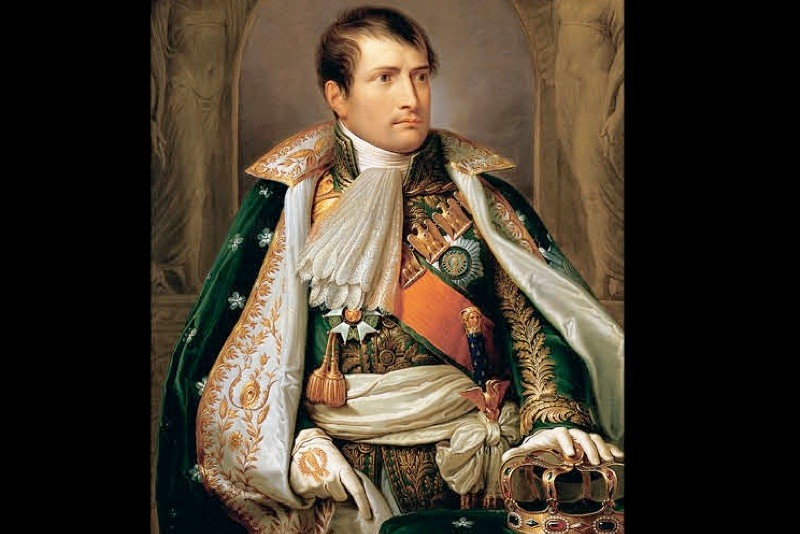
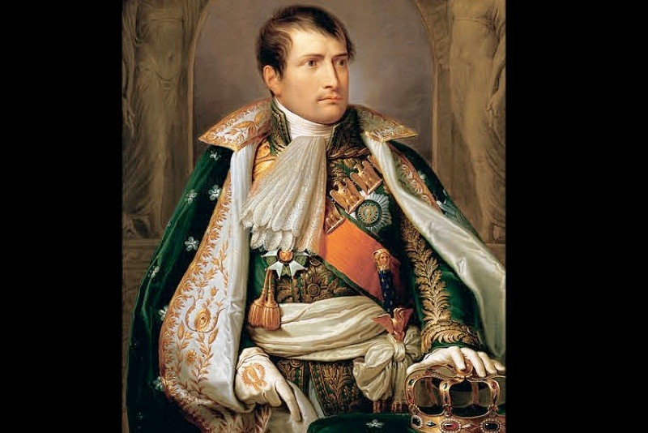

Hobbies
Reading
Reading a book a day for years, sharpened my mind

History
I knew more than my history teachers about ww2!
Toys
Toy Soldiers

I would re-enact wars
Castle
I would re-enact medieval wars
Reading a book a day for years, sharpened my mind
I knew more than my history teachers about ww2!

I would re-enact wars
I would re-enact medieval wars